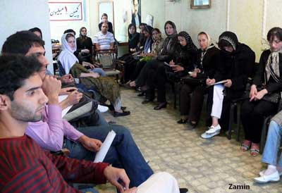

|
|
برگزاری پنجمین کارگاه آموزشی کمپین در کرج / زهره امین - کرج
شنبه14 اردیبهشت 1387

تغییر برای برابری : پنجمین کارگاه آموزشی کمپین کرج صبح روز جمعه ششم اردیبهشت ماه برگزار شد. در این جلسه 28 نفر از علاقه مندان و داوطلبان همکاری با کمپین یک میلیون امضا شرکت کرده بودند. مهمانان این بار کارگاه کرج ، مریم حسین خواه ، کاوه مظفری و محمد شوراب بودند.
کاوه مظفری ابتدا تاریخچهی مبارزات زنان در ایران و نحوهی تشکیل کمپین یک میلیون امضا را شرح داد. سپس دفترچه و برگه امضای کمپین را خواست حداقل همهی ما برای داشتن حقوق برابر دانست و گفت هر کس - فارغ از هر عقیده و مرام و مسلک - نوشتههای دفترچه را قبول داشته باشد و برگه را امضا کند، عضو کمپین است. او گفت:"هر آگاهی باید به عمل برسد و حتی امضای سادهی ورقه کمپین خودش یک نوع عمل پس از آگاهی از قوانین تبعیضآمیز محسوب میشود. کسی که با اسم خودش پای درخواست برابری حقوق زنان و مردان را امضا میکند، در واقع نشان داده که شجاعت ابراز عقیده در مورد قوانین جاری را دارد"
کاوه مظفری هدف کمپین را عمومی شدن مطالبه حق برابری دانست و گفت بعد از عمومی شدن این خواسته است که ما میتوانیم به سمت عوض کردن عملی قوانین برویم. کمپین متعلق به همه زنان ایرانیست و نه بخش متوسط و یا طبقهی مرفه اجتماع. افراد مرفه شاید بتوانند با گرفتن وکیل و پرداخت مبالغ هنگفت قوانین را دور بزنند، اما مردم فقیر به علت ناآشنایی با قوانین و نداشتن پول، معمولا بزرگترین قربانی این قوانین تبعیضآمیز هستند.
در ادامه برنامه، مریم حسینخواه روزنامهنگار و فعال حقوقی زنان همهی قوانین تبعیض آمیز را یک یه یک به طور کامل تشریح کرد. و سپس به تاثیرات خشونت آمیزقوانین بر زندگی زنان و دختران اشاره کرد:"متاسفانه یک دختر ایرانی با تمام محدودیتهایی که در خانهی پدر دارد، اولین چیزی که بعد از ازدواج از دست میدهد اجازهی" کار" و انتخاب "محل سکونت" است. قانون به شوهر اجازه میدهد به محض جاری شدن عقد از کار کردن زنش جلوگیری کند و یا او را به دورافتادهترین روستاها ببرد."
مریم حسین خواه برای تبیین بیشتر این قوانین با کمک داوطلبان مثالهای زیادی در این مورد و موارد دیگر شاهد آورد:
دختر وکیلی را می شناسم که بعد از ازدواج، همسرش از دادگاه تقاضای ابطال پروانهی وکالت او را کرد و متاسفانه قاضی رأی به نظر مرد داد... زن کارمندی که در تهران زندگی می کند مجبورشده به محل اقامت شوهرش در روستاهای سیستان بلوچستان برود و...، دختری همسر یک مرد افغانی یا تابع کشور دیگری شده بدون اینکه بداند فرزندانش نمیتوانند تابعیت ایرانی داشته باشند."
در مورد دیه، دختری از خود داوطلبان کمپین گفت در اثر حادثهای پایش صدمه دیده و با تمام دوندگیها و شکایتها فقط نصف دیه به او تعلق گرفته در صورتیکه دکتر جراح پول کامل عمل جراحی را از زنان هم میگیرد.
از زنی سخن رفت که شوهرش بعد از طلاق و گذشتن دورهی حضانت، بچه را گرفته و نمیگذارد مادرش بچه را ببیند .
داوطلبان در این قسمت بسیار همکاری میکردند و درددلهایی کهسالها در گلو داشتند باهم در میان میگذاشتند.
در قسمت سوم کارگاه محمد شوراب با روش تسهیلگری نحوهی برخورد چهره به چهره با مردم در زمان گرفتن امضا شرح داد. داوطلبان سه گروه شدند و هر گروه با راهنماییهای محمد شوراب نمایشنامهای را بازی کردند.
این قسمت هم مثل دو قسمت قبل خیلی مورد توجه حاضرین قرار گرفت و ما متوجه شدیم بازیگران بالقوه زیادی در جمع مان داریم.
مسئلهای که برای من، به عنوان کسی که تقریبا در همهی کارگاههای کرج حضور داشتم، جالب است این است که هر چه از عمر کمپین میگذرد داوطلبان با شور و نشاط بیشتری به آن میپیوندند و محکمتر بر سر عقاید خود پایبندند. و حتی خبر از دستگیریها عزمشان را برای تغییر قوانین جزمتر میکند.